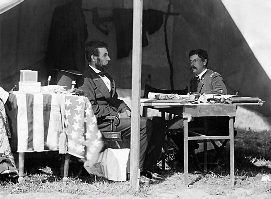

EL MAGNICIDIO
Durante la guerra, Abraham Lincoln hubo de improvisarse como estratega y general en jefe, remediar los desastres militares, las sediciones y la corrupción interna, y oponer su tranquila integridad a cualesquier críticas y acusaciones. Actuó con rapidez y energía contra los insurrectos y las intrusiones extranjeras, aprobó drásticas leyes marciales y estableció una rigurosa censura de prensa, de suerte que, a pesar de su clemencia y de su moderación, fue tachado de dictador por sus opositores. Desde 1863, la marcha favorable de las operaciones militares, sus medidas de protección al desarrollo de la industria y su política conciliadora con respecto a los estados díscolos le permitieron mantener la confianza de sus conciudadanos. Finalizada la contienda, el problema inmediatamente planteado fue el de la reconstrucción de la Unión en el terreno político, es decir, la reincorporación de los estados rebeldes al congreso federal. Lincoln era partidario del restablecimiento de la federación en igualdad de derechos para todos los estados, de inscribir en la Constitución el fin de la esclavitud y de iniciar inmediatamente la reconstrucción del país; preconizó una inmediata readmisión de los antiguos confederados, con unas garantías mínimas y la condición de que aprobasen la decimotercera enmienda a la Constitución, que suponía la abolición de la esclavitud. El congreso, sin embargo, quiso añadir requisitos más duros a esta fórmula.